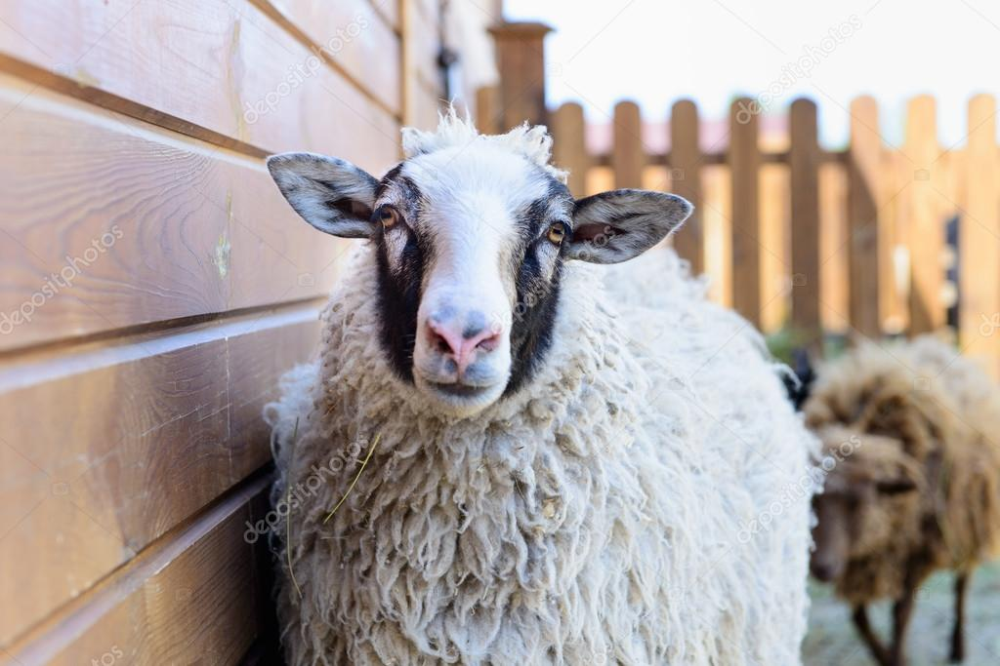

Teema3 – Villa ja tuotteet
Teema3-sivulla keskitytään villaan...
Villan laatuun vaikuttavat monet asiat...
Kerintä tehdään rauhallisesti...
Villa lajitellaan laatuluokkiin...
Osa villasta kehrätään langaksi...
Langasta valmistetaan tuotteita...
Villaa käytetään myös eristeenä...
Luonnonmateriaalit ovat pitkäikäisiä...
Tuotteet suunnitellaan kestämään...
Vierailijat voivat tutustua myymälään...
Myymälässä kerrotaan valmistuksesta...
Teema3 korostaa vastuullisuutta...
Villan tarina alkaa laitumelta...
Jokainen tuote kantaa tarinaa...
Teema3 kannustaa pohtimaan alkuperää...
